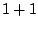
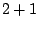
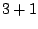

We study a time parallel space-time finite element approach for the nonhomogeneous wave equation using a continuous time Galerkin method and a time decomposition strategy for preconditioning. Space-time finite elements provide some natural advantages for numerical relativity in black hole simulations. With space-time elements, time-varying computational domains are straightforward, higher-order approaches are easily formulated, and both time and spatial domains can be discretized using a more general mesh. We present fully implicit examples in , , and  dimensions using linear quadrilateral, hexahedral, and tesseractic elements. Krylov solvers with additive Schwarz preconditioning are used for solving the linear system. We introduce a time decomposition strategy in preconditioning which significantly improves performance when compared with unpreconditioned cases. Parallel performance results are also given.